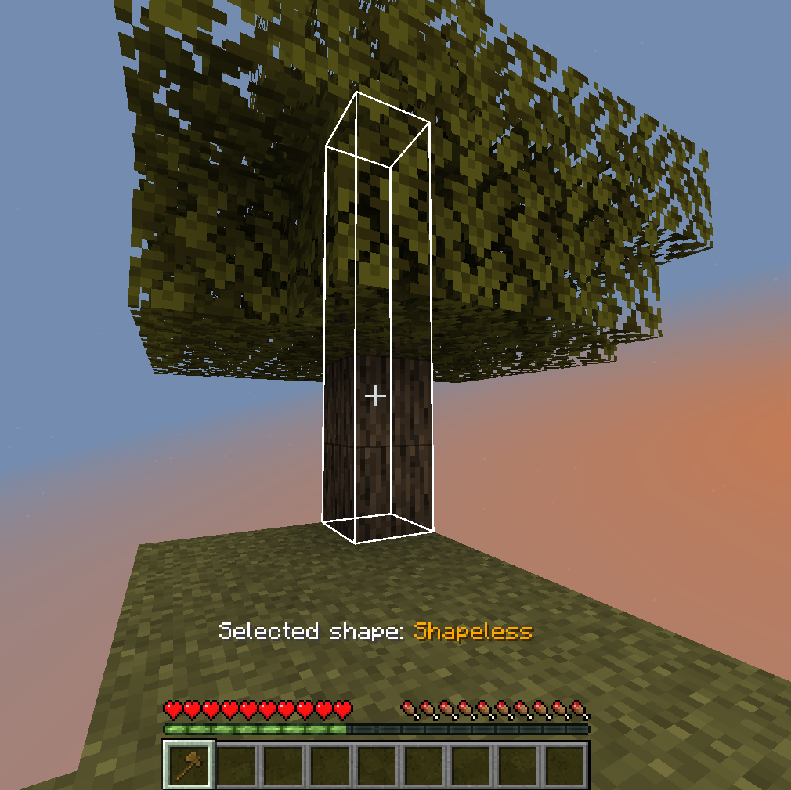
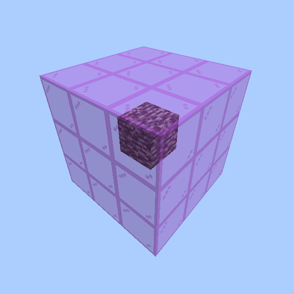
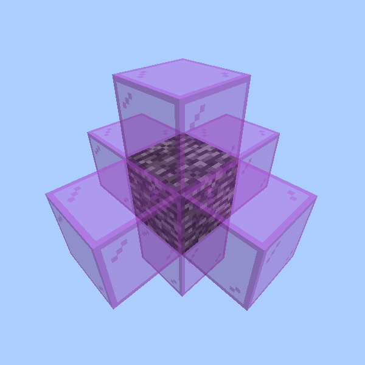

Excavar


Mining in batches is possible and handy in some cases. This mod allows it!
How to use
- Select the correct tool (can be disabled in config).
- Press the key for mining multiple blocks (default: left
Alt). - Hold the key and mine the targeted blocks.
The key is called Multimine in the category Excavar.
Additional features
As you can see in this image, you'll see a preview of targeted blocks. This highlighting may be incorrect if you have an enchantment like Unbreaking on your tool.

Additionally, you see the "Selected shape" is set to "Shapeless". Shapes can be added by other mods. Builtin the mod, there are two different shapes:
- Shapeless
- Searches for any block around it
- Tunnel
- Searches only in the direction you're facing the block at
Switching the shape can be done by holding the Multimine button (default: left Alt) while sneaking and scrolling.
Client config
- You can set if the multimine action can only be used while sneaking -
onlyWhileSneaking(default:false). - You can set if tools should be prevented from breaking -
preventToolsBreaking(default:true). This will stop the mining if the tool reaches 1 durability. - You can set if the outline (see image) should be rendered -
enableOutline(default:true). - You can choose if durability should be considered for highlighting -
considerDurability(default:false). This would cause the highlighting to stop after the item would break. May be inaccurate with some enchantments.
Server config
The server config file is stored in each world separately. You can find it after creating/joining the world in
.minecraft/saves/<world name>/serverconfig/excavar-server.toml. If you want to provide a default config for each world
(maybe for modpacks), put that file with changed values in .minecraft/defaultconfigs/.
- You can set the block limit how many blocks should be mined max at once -
blockLimit(default:16). - You can decide if the player needs a tool which drops the loot for a block -
requiresCorrectTool(default:true). The player will still be able to mine logs by hand, but stone will need a pickaxe (or other valid tool). - You can decide if the diagonal blocks (when using shapeless) are ignored -
disableDiagonals(default:false). Below, you can see an example. Imagine the bedrock is the block you're targeting. The magenta glass would be the blocks which will be found additionally for that one specific block.
| Enabled (default) | Disabled |
|---|---|
|  |  |
- You can decide if the player is even able to change the shape described in How to use -
allowShapeSelection(default:true). - You can select the allowed blocks for mining -
allowedBlocks(default:ALL). All allowed values:ALL- all blocks can be mined with ExcavarORES- only ores (blocks with tag#forge:ores) can be mined with ExcavarLOGS- only logs (blocks with tag#minecraft:logs) can be mined with ExcavarORES_AND_LOGS-ORESandLOGScombined
- You can define a list of tools which cannot be used with Excavar -
deniedTools. For that, you can use*as a wildcard, for example"minecraft:*_pickace"would disable all vanilla pickaxes.